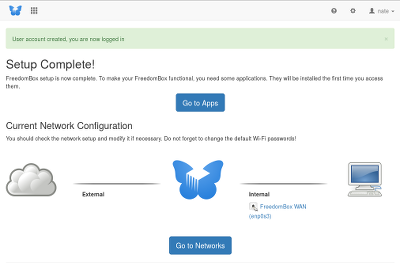
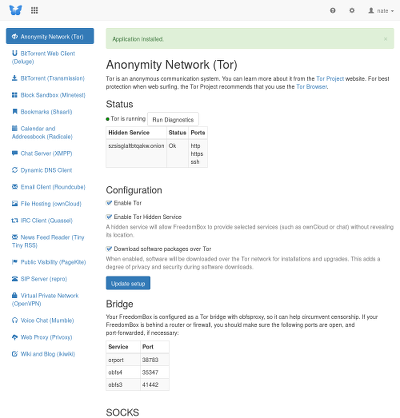
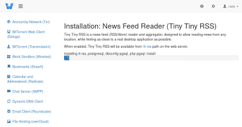
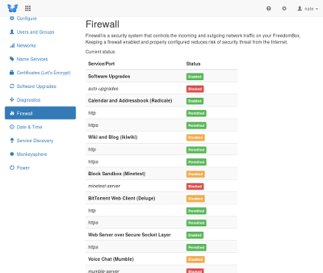

New functionality and polish in FreedomBox 0.9
The FreedomBox project is an effort to build an easy-to-use Debian environment that can run on affordable, headless devices and provide useful Internet and cloud-like services (email, file storage, chat, calendar-and-contacts management, and so on) using nothing but free software. Because the software for the services of interest already exists, FreedomBox development is, in large part, focused on integration and making the requisite system-administration tasks painless. After all, the goal is to produce a plug-and-play option that replaces commercial web services with a self-hosted alternative. The individual pieces are already available for use by those with experience running Linux servers; the challenge is in making them accessible to users without such a background. The latest FreedomBox release, version 0.9, makes considerable progress on that front.
The new release was made on April 24. When we last looked at FreedomBox in late January

As the release notes highlight, FreedomBox 0.9 adds three new user-facing applications: the RSS feed reader Tiny Tiny RSS (tt-rss), the calendar-and-contacts server Radicale, and Minetest, which is a clone of the popular Minecraft game.
The inclusion of tt-rss and Radicale is noteworthy because those applications fill niches addressed in previous FreedomBox releases by ownCloud—which has been removed from Debian since the preceding FreedomBox release. The distribution's package maintainers came into conflict with the ownCloud team in January over the packaging and distribution of updates. While there was initially some hope that the two projects would manage to work things out, the debate was reignited in late February. On March 1, Debian's David Prévot marked ownCloud for removal from the Debian archive. The actual package-removal process took a few weeks, as the main package and dependent packages were removed from the various Debian distributions (experimental, unstable, testing, etc.) by the Debian FTP Masters.
Radicale and tt-rss cover two of the more popular services previously offered by ownCloud, but the third—file synchronization—remains missing. The FreedomBox developers have indicated that they intend to explore seafile as a replacement, although the details have yet to be worked out.
As of right now, though, ownCloud remains listed in FreedomBox's
application panel—but an attempt to install it will fail. That
will need to be fixed, but it may be a bit of a moot point for many

There have been several other additions to the FreedomBox application selection in the intervening releases, including the Quassel IRC gateway, OpenVPN, the repro SIP server, a Let's Encrypt configuration tool, and the Monkeysphere utility, a tool to bind SSL/TLS certificate trust and SSH host authentication to OpenPGP keys. FreedomBox's Monkeysphere package was initially configured only for use with SSH; in the 0.9 release it works with SSL/TLS certificates as well.
Apart from the new applications, the biggest changes in
FreedomBox 0.9 have been to the web-based interface, Plinth, that is
used to configure the FreedomBox system as well as to install and
manage individual applications. Specifically, the new release sports

Overall, the revamped Plinth interface is a dramatic improvement over version 0.3; it is easier to navigate and faster to respond. In general, FreedomBox has made highly laudable progress on the configuration front: setting up a new user account at first launch is trivial, the Plinth interface features a range of easy to read system-status and diagnostic reports, and so on. The new application-installation process gets high marks as well. For each application, it provides not only an explanation of the purpose, but useful information such as a link to the service's correct URL (e.g., http://freedombox.local/tt-rss) and the default login credentials for the service.
That said, not all of the descriptions are top-notch. The ikiwiki
description, for example, says (in its entirety): "When enabled, the
blogs and wikis will be available from /ikiwiki.
" Compare that
to the more detailed descriptions in the tt-rss and Tor pages visible
in the screenshots above. Granted,
most people today know what blogs and wikis are, but the omission
stands out. Other yet-to-be-fleshed-out application descriptions are
likely to be less clear for the nontechnical set (such as web
proxies).
And it is peculiar that there is some overlapping functionality in
the application choices. It will probably be useful to help users
without a technical background decide whether they need to use
PageKite, Dynamic DNS, OpenVPN, or some other mechanism to access
their box. Similarly, some users are likely to be confused as to why
there are two BitTorrent apps (Transmission and Deluge) provided. The

FreedomBox is a project well-suited for users who value their privacy (hence their interest in running their own server rather than using commercial offerings), and the new release scores high on the privacy and anonymity front. Tor is pre-installed in the release images and can be enabled with a click. In addition to providing a Tor circuit for anonymous web browsing, FreedomBox can download its packages and package updates over Tor, and it can automatically set up a Tor hidden service through which all of the installed applications can be used. The system also comes with a pre-configured firewall
There are still challenges ahead for FreedomBox. Several of the
supported applications still have a rather high barrier to
entry—setting up a SIP server for voice and video calls, for
example, still entails learning some potentially obscure terminology
and configuration options. But, on the whole, FreedomBox proves
that it is possible to provide an easy-to-configure and easy-to-use
Linux server that runs the services users expect today. The
applications and the system-administration tools are well integrated,
too. It is not yet clear exactly when FreedomBox will be declared
ready for general public usage, but that goal post hardly seems out of
reach—as it might have in the project's earliest days.
| Index entries for this article | |
|---|---|
| Security | Distributions |
| Security | Home network |
| Security | Internet |
Posted Jun 3, 2016 2:19 UTC (Fri)
by mathstuf (subscriber, #69389)
[Link]
Posted Jun 3, 2016 5:30 UTC (Fri)
by joey (guest, #328)
[Link]
Posted Jul 5, 2016 7:40 UTC (Tue)
by hex-m (guest, #108594)
[Link]
Please help us in testing these images.
Links:
1) http://ftp.skolelinux.org/pub/freedombox/0.9-rc2/testing/
New functionality and polish in FreedomBox 0.9
New functionality and polish in FreedomBox 0.9
Images are now available
2) http://ftp.freedombox.org/pub/freedombox/0.9-rc2/testing/